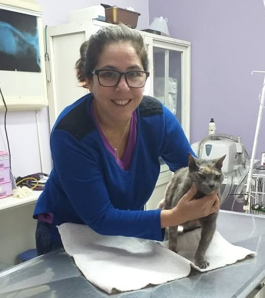

Dra. Jorgelina Barrera
Propietaria.
Médica Veterinaria orientada a profundizar los conocimientos en clínica, hematología, ecografía, poniendo énfasis en la metodología diagnóstica y terapéutica. Además es mi compromiso ineludible minimizar las prácticas cruentas y tediosas durante las sesiones terapéuticas de nuestros pacientes con hincapié en terapias amigables para minimizar el estrés.
Especialidades en clínica general, Oncología clínica, Hematología y Citología clínica en pequeños animales, y servicios de ecografía.
Tengo 23 años de ejercicio profesional en Clínica de Animales de compañía.
- Universidad Nacional de Rosario. Médica Veterinaria, Clínica. Oncología. Hematología.
- Diplomada en Oncología Clínica (CEMV).
- Diplomada en Laboratorio Clínico (CEMV).
- Diplomada en Ecografía en animales de compañía.
- (FORVET) Profesora Universitaria para la Educación de nivel Medio y Superior en el área de Cs. BIOLÓGICAS Y Tecnología aplicada.
- Miembro activo de la Sociedad Argentina de Oncología Veterinaria (SAOV).